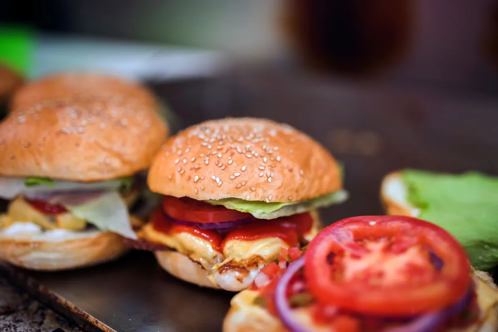

Como criar um cardápio digital para hamburgueria (passo a passo 2026)

Ter um cardápio digital para hamburgueria deixou de ser luxo: é o que separa quem cresce de quem fica preso pagando comissão para plataforma. Neste guia você vai aprender, passo a passo, como criar o seu — e por que ter um cardápio próprio é o melhor investimento do seu delivery.
1. Defina suas categorias e produtos
Antes de qualquer ferramenta, organize o que você vende: hambúrgueres, combos, porções, bebidas e sobremesas. Um cardápio bem categorizado vende mais porque o cliente acha o que quer em segundos. Destaque os campeões de venda com tags de "Mais Vendido".
2. Tire boas fotos dos lanches
Foto vende. Use luz natural, fundo limpo e mostre o produto montado. No cardápio digital, a imagem é o seu vendedor silencioso.
3. Escolha uma plataforma sem comissão
Aqui está o ponto que mais pesa no bolso. Plataformas como o iFood cobram comissão por pedido e ainda guardam a sua lista de clientes. Um cardápio digital próprio, como o Menuzia, cobra um valor fixo e deixa todo o lucro com você.
- Sem taxa por pedido: você paga R$67/mês fixo, venda 10 ou 10 mil.
- Base de clientes sua: quem pede entra na sua lista pra sempre.
- Pedidos direto no seu caixa: sem intermediário.
4. Configure entrega, pagamento e WhatsApp
Defina taxa de entrega por bairro, formas de pagamento (Pix, cartão, dinheiro) e conecte o WhatsApp para receber pedidos e disparar campanhas. No Menuzia, nossa equipe configura tudo isso pra você depois da compra.
5. Divulgue o link e comece a vender
Seu cardápio digital vira um link único. Coloque na bio do Instagram, no status do WhatsApp e nos panfletos com QR Code. O cliente abre, escolhe e pede — sem baixar aplicativo.
Quanto custa criar um cardápio digital?
Existem opções "grátis" que cobram comissão escondida e opções pagas de R$150 a R$300/mês. O Menuzia fica no meio do caminho certo: R$67/mês fixo, sem comissão, com configuração feita pela nossa equipe e suporte técnico incluso. Veja também quanto custa um cardápio digital próprio.
Pare de pagar comissão por pedido
Tenha seu cardápio digital próprio por R$67/mês fixo. Nós configuramos pra você e damos todo o suporte técnico.
Criar Meu Cardápio Agora →